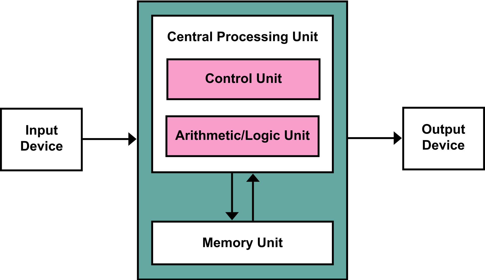

Processamento Computacional 0802
Este modulo possui um total de 25 horas.
O Objectivo final deste modulo é conseguir descrever os elementos base de tarefas de processamento em um computador.
Alguns dos pontos que este módulo toca, são , a organização de um computador, nomeadamente a conecção entre o CPU,memória, barramentos e dispositivos de entrada ou saida e como eles funcionam juntos para desenvolver tarefas, estes que seguem a arquitetura de Von Neumann.

No esquema acima, podemos ver como a arquitetura de Von Neumann funciona.
O dispositivo de entrada dá informação ao CPU, que é processada com a ajuda da Memoria externaapós ser procesado finalmente dá um resultado final(output).
o CPU como podemos observar em cima, divide-se em 2 secções, a CU e a ALU, estas são as partes do CPU que organiza as tarefas e que executa/calcula-as respetivamente.
A Mémoria externa , esta que se pode dividir em dois tópicos, a mémoria temporaria e permanente, por exemplo a RAM que perde a informação quando perde energia e um disco rígido que mantém a informação se nao for danificado ou a informação não for apagada respetivamente, mas também há a ROM e o Cache, o ROM possui a informação crucial para o computador ligar enquanto o cache guarda algumas informações para o CPU usar.
Clique Aqui! para mais informações.